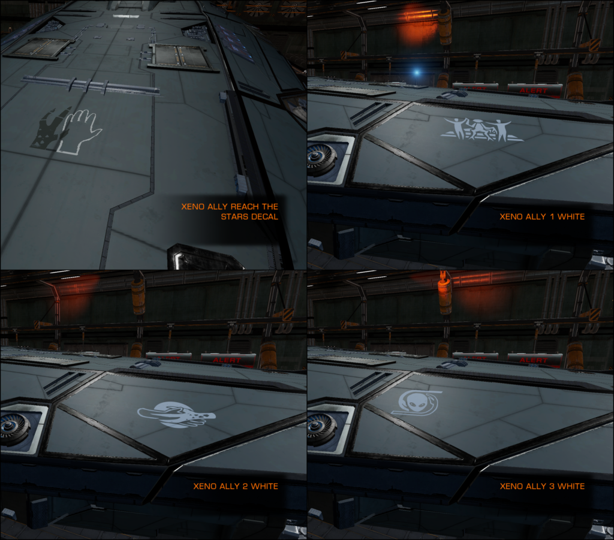

A Listening Post named “Joy Senne ICE Beacon” can be found in the Aiabiko system, orbiting body 3.
The location of this Listening Post was revealed on the 30th Sep 3308, via a Galnet article: Militaries Prepare for Further Thargoid Strikes
“Popular opinion on continued military actions against Thargoid vessels remains primarily favourable, but the ‘xeno-peace’ discussion continues to grow. In the Aiabiko system, leading ICE personality Joy Senne has released a ‘beacon drop’ package in an effort to promote the idea of peace to independent pilots. Ships scanning the beacon will receive a xeno-affirmative ship nameplate set and decal – paid for by Senne – along with clips of a recent discussion with Sovereign Times anchor Heimar Borichev about the so-called ‘Thargoid Advocacy Project’.”
The Listening Post contains 3 voiced logs, along with the Ship Decal and 3 Ship Nameplate sets, as mentioned in the Galnet article. Each of the Nameplates sets have White, Grey and Black variants.

HEIMAR BORICHEV 1/3 – JOY SENNE ICE-CAST
A clip from the Joy Senne ICE-Cast with Heimar Borichev, discussing the Thargoid Advocacy Project and pro-peace sentiments.
JOY SENNE: So, you’re in the TAP stuff, aren’t you?
HEIMAR BORlCHEV: Oh yeah, I believe it’s a very impressive movement. The fact that so many people support a diplomatic solution to the war is really encouraging.
JS: So how does Heimar Borichev get involved in that? I mean, on your show you’ve shared your… scepticism, I guess is the best way to put it, of how the Thargoid war has developed. You’ve covered failings by INRA, Aegis and Azimuth. But the TAP thing has really appeared through social hubs, right? It comes from the people.
HB: Well, okay. Let me answer the initial question. TAP, or the Thargoid Advocacy Project for people unfamiliar with the term –
JS: Oh, I’ve been talking about it for a while. My viewers are probably sick of it by now.
HB: Let’s hope not! Because again, I have to say, it’s really important, I think. The Thargoid Advocacy Project is, in my mind, the best chance we have for a diplomatic resolution to the war.
JS: That’d be amazing. But would the supes even listen?
HB: Systems within a superpower’s domain, particularly the Empire and Federation, are very much governed with the idea that decisions are made on behalf of the people. Even if that decision is unpopular.
The Proactive Detection Bureau is a good example of what I mean. Stellar factions withdrew from the Federation in protest at the PDB’s deployment, and yet – and yet, it still operates in the name of public safety.
In the Alliance, where policy making is a little more collaborative, the prospect of a military pact with Sirius Corp inspired the people of Reorte to erupt in protest. And yet the pact was ratified anyway.
JS: That Reorte thing was such a wild ride. What was that guy’s name…?
HB: Which guy?
JS: The guy who organised the protest against Sirius?
HB: Fergus Cassidy.
JS: Cassidy, yes. He stood up to the biggest megacorp in the galaxy and got away with it. Like, imagine taking on Sirius Corporation, with all its power and wealth, and actually coming out on top?
HB: Well, Cassidy harnessed the will of the people and drew the support of independent pilots. And that leads back to my interest in TAP. More and more regular civilians are taking notice of the peace message, and sharing it on ICE platforms. Your media, Joy. My intended contribution is to bring that conversation to the mainstream newsfeeds and keep it there.
JS: Like giving it some legitimacy, almost?
HB: Well, not almost – yes! In a manner of speaking, yes. I wouldn’t say it like that, because it suggests that non-mainstream media is somehow less important. We all have our uses, I suppose.
JS: I totally get what you mean. I think that, if we’re being honest, the xeno-peace calls should be seen on Galnet, they should be on the Imperial Herald, and on the Federal Times.
Promoting peace and a diplomatic solution to a war which is now five years long shouldn’t be restricted to “independent journalists”.
It’s why I’m speaking about it – my viewers out there will shout it out when we’ve got a good message. And this is good. Peace is the answer!
HEIMAR BORICHEV 2/3 – JOY SENNE ICE-CAST
A clip from the Joy Senne ICE-Cast with Heimar Borichev, discussing the recently leaked Thargoid ‘roar’ and rumoured attempts to keep it from the public.
HEIMAR BORICHEV: Have you heard the recording from HIP 22460?
JOY SENNE: I have. It’s such a sad sound. It’s so mournful.
HB: We don’t know what made it. It is definitely Thargoid, but it does not match the noises from the Thargoid ships we have encountered so far.
JS: So, some of my crew are convinced that something alive was used to power the Proteus Wave weapon that Salvation built. I wouldn’t put it past him. He was such a scumbag.
HB: You are not a fan of Salvation’s work, then?
JS: Are you kidding me? Here. let’s play the sound for everyone. Turn your volume up! Listen to this.
[A Thargoid sound originating from HIP 22460 is heard]
JS: That sounds like something’s alive and in pain. Whatever Salvation tried to do, it hurt the Thargoids.
HB: And then they reacted violently. That is what I’ve been arguing on The Sovereign network. We have been the aggressor in this conflict, and the Thargoids are responding in kind. There must be a concerted effort to break the cycle of war, or both species are doomed to many more years of suffering.
JS: All three superpowers covered it up, though. The sound was leaked by an unknown source. So we kinda have to ask ourselves: why?
HB: There’s a lot of money to be made from warfare, Joy. Federal and Imperial navies always need ships. Weapons. Resources. New technology. Those far away from the front lines are making billions from this conflict.
JS: But deliberately hiding this from us? This evidence that the Thargoids feel pain or even sadness? If that’s what they did – and I’m not saying they definitely did. I’m just saying it doesn’t look good – then we’re being lied to. And I don’t want to believe that they’d lie to us. It makes me feel… icky or something.
HB: Once again. the Thargoid Advocacy project may change that. If our leaders try to convince the public that continued war is the only answer, they may be surprised by such strong calls for peace.
JS: I hope so. Keep pushing for peace, crewmates!
HEIMAR BORICHEV 3/3 – JOY SENNE ICE-CAST
A clip from the Joy Senne ICE-Cast with Heimar Borichev, discussing the recently discovered ‘anomaly’ signals heading towards the core systems.
HEIMAR BORICHEV: Your crew? So, you have a ship?
JOY SENNE: Oh, no! Well, yes, actually. I do have a ship. A Dolphin; she’s a beauty. But I call my viewers my crew.
HB: Ah, I see. Yes, of course.
JS: We’re on a journey together. My crew have been with me since day one, through good times and not so good ones. In fact, we actually have a question sitting here with a hundred and eighty-seven thousand askers, so let’s see… “Heimar, what do you think about the mysterious signals currently moving towards the core systems.”
HB: Ah, that is a good question. I find them fascinating. A mystery yet to be solved.
JS: I know, right? I hope we can learn more about them soon.
HB: Have you discussed them on your show before?
JS: Let me tell you something: My crew has been tracking those things by the hour. We’re so excited about what they could mean.
HB: Well, your ‘crew’ must have considered both the pros and cons of what these anomalies are. It would be naive to expect a purely benevolent intent.
JS: I get what you mean. Are you worried that they’re dangerous?
HB: Yes, I worry that we have invited danger to our space, yes. I do. Our leaders have overseen a consistent level of antagonism towards anything non-human.
JS: Do you think they’re Thargoid related?
HB: That is a popular theory, but currently we have no evidence to support it. All we know is that they are travelling towards our borders at a remarkable speed.
JS: The first one we found has a definite route. Like, it doesn’t seem like it’s a comet or anything. It’s moving between systems.
HB: Right, which indicates a level of intelligence. Or good programming, maybe. But if we assume the former – and, once again. we must not be naive in our thinking – if it is an intelligent source, then it means we must be very careful in how we greet it.
JS: If recent events are anything to go by, we’ll probably try and form a battle fleet to go intercept it. I wish we’d try something else for once.
HB: Which brings us back to the TAP idea. We must petition our leaders. On the local, stellar and interstellar level. Push every aspect of governance to explore diplomatic avenues, with both the Thargoids and with these signals if at all possible. Humanity has to trust the inherent compassion that has always guided it through periods of great strife.
JS: I completely agree. You heard the man, people! Get the message out there. We need an alternative to war, and its time our voices were heard.
But that’s all the time we have – I’ve got an ICE convention tomorrow so I need some sleep. It’s been so fun! You’re welcome back anytime, Mr. Borichev.
HB: Thank you for having me. Joy. I’ve enjoyed talking to you and to everyone. And remember to follow the Sovereign for independent news.
JS: We’ll be there! I’ll be casting again soon, crewmates. ‘Til then I’m wishing you goodbye, good luck and good times to come. Mwuah!